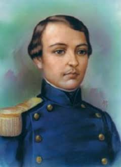
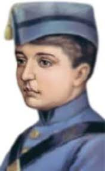
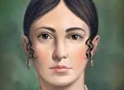

Agustín de Iturbide
Fue militar y político mexicano. Participó en la Independencia de México y fue proclamado emperador en 1822.

Mariano Barrera
Fue un personaje relacionado con la historia de México durante el periodo de la Independencia.

Fernando de España
Fernando VII fue rey de España durante el inicio de la Independencia de México y rechazó el movimiento independentista.

Francisco I. Madero
Fue político mexicano y líder de la Revolución Mexicana. Defendió la democracia y se opuso al gobierno de Porfirio Díaz.

Ignacio Allende
Fue militar insurgente y uno de los principales líderes de la Independencia de México. Participó en las primeras batallas del movimiento.

José María Morelos
Fue sacerdote y líder insurgente. Continuó la lucha por la Independencia después de la muerte de Miguel Hidalgo.

Josefa Ortiz
Fue una importante participante de la Independencia de México. Avisó a los insurgentes que la conspiración había sido descubierta.

Juan Aldama
Fue militar insurgente y participó en el inicio de la Independencia. Formó parte del grupo que organizó el levantamiento de 1810.

Leona Vicario
Fue una de las primeras mujeres periodistas de México. Apoyó a los insurgentes proporcionando información y recursos.

Mariano Suárez
Fue un personaje relacionado con la historia política de México y con los acontecimientos de la época de la Independencia.